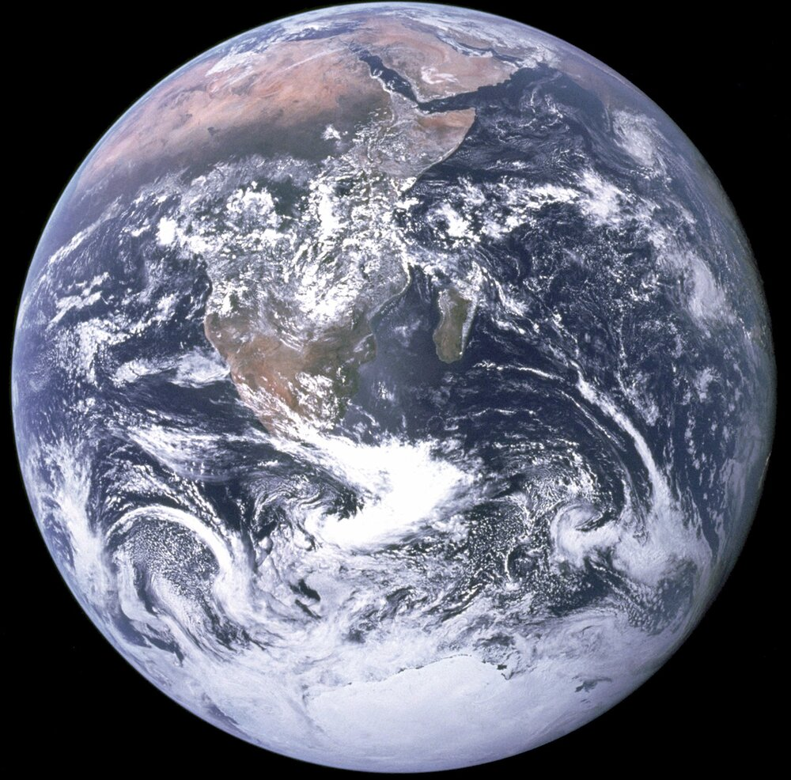
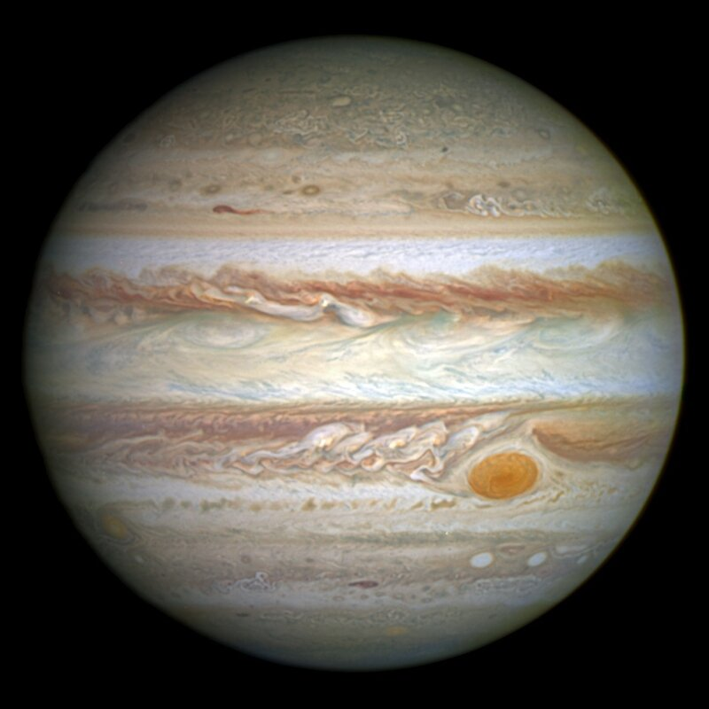
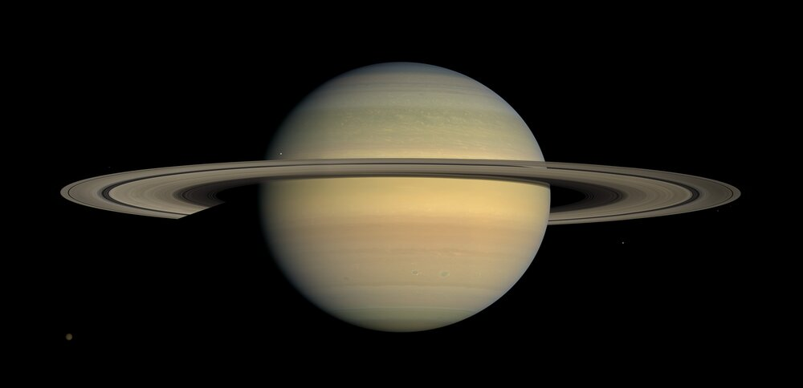
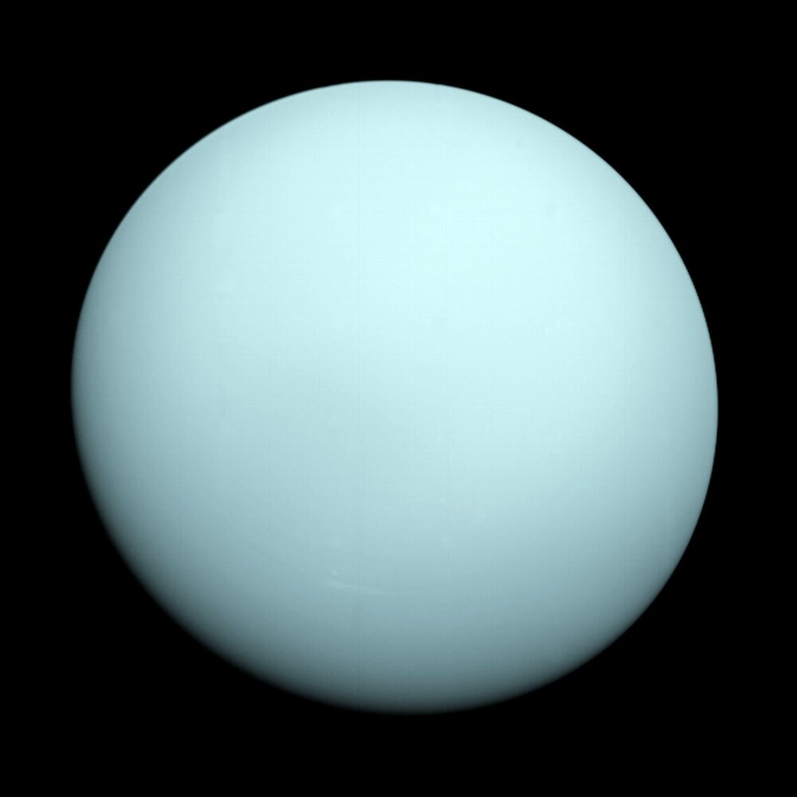

.jpg)
Planets
Each planet in the solar system has peculiarities so they are classified according to their constitution. In this aspect, we can highlight two types of planets: terrestrial planets (made up mainly of rocks), located closer to the sun such as Mercury, Venus, Earth, and Mars, and gaseous planets (made up mostly of gases), which are larger and less dense than terrestrial ones: Jupiter, Saturn, Uranus, and Neptune. Planets are in constant motion so that they revolve around their orbit or the Sun. The rotation movement designates the movement that the planets perform around their axis (equivalent to the time of 1 day). The translation movement defines the movement that the planets perform around the sun (equivalent to the time of 1 year). Are you enjoying this trip?
Let us explore together the planets!
Mercury
Mercury is the smallest and innermost planet in the Solar System, orbiting the Sun every 87.969 Earth days. Its orbit has the greatest eccentricity, and its axis has the smallest inclination to the orbit plane of all the planets in the Solar System. Mercury's atmosphere is made up of potassium, sodium, helium, molecular oxygen, and hydrogen, as well as nitrogen, carbon dioxide, and water vapor. In a very, very slow process, Mercury is getting smaller every day. It is estimated that the planet is about 9 miles smaller than it was four billion years ago (we told you it was a slow process). Astronomers believe this is happening because its iron core is cooling, which is making it solid, therefore reducing the planet’s volume. Putting a probe in Mercury’s orbit is a really difficult task as the Sun’s gravity is too strong. Precise, fast changes in speed would be required. Because of this, we have only two probes to study the planet, The Mariner 10 in 1973 and the MESSENGER in 2004. Mariner 10 simply slingshot around Mercury, while MESSENGER studied the planet from orbit for four years before it was commanded to impact the planet’s surface in 2015. It is believed the Mariner 10 could be orbiting the Sun, but it is out of fuel and has been powered down since 1975. A fun fact: In 2012 a green meteorite was found being sold at a street market in Morocco. After studying its composition, astronomers believe it might have come from Mercury as it matches the data we have of Mercury sent by the MESSENGER probe. The meteorite could have arrived after one of the many impacts on Mercury sent some pieces of it flying into space.
Venus
Venus is the second planet in the Solar System in order of distance from the Sun, orbiting it every 224.7 days. Venus is the most Earth-like planet in our Solar System. The two bodies are almost the same size, and the composition of Venus is the same as our planet. Venus' orbit is also closer to Earth than any other planet in the solar system. Both planets have relatively new surfaces and dense atmospheres with clouds. However, the clouds of Venus are mostly made of sulfuric acid, and the winds pass through them at super-fast speeds that can reach 724 km/h. These Venusian winds are faster than Earth's fastest tornado. As most of its atmosphere is made of carbon dioxide, a massive greenhouse effect warms the surface of Venus, causing temperatures there to reach 470 degrees Celsius. This heat is enough to melt lead. Scientists believe that Venus once possessed large amounts of water or oceans. However, due to the high temperatures produced by the extreme greenhouse effect, this water evaporated long ago, leaving the surface the way it is today: hot and hostile to sustaining life. Distance from the Sun: 108,200,000 km.
Earth
Planet Earth is one of the planets that are part of the Solar System and is the third closest planet to the Sun. Also known as the world, blue planet, or water planet, it has about 70% of its surface covered by water. The existence of this substance in its liquid state, together with the presence of oxygen and the ability to recycle carbon dioxide, make the Earth a planet with unique characteristics. In addition to presenting favorable conditions for the existence of life, the Earth also has natural resources (renewable and non-renewable) that provide for the maintenance of this existence. It is through these resources that living beings maintain themselves, as mineral resources, energy sources, and food, among others, are removed. During evolutionary history, man adapted to the conditions presented by the Earth and improved his skills, taking from it what was necessary for his survival in an increasingly precise way. The Earth has the single largest natural satellite of the Solar System, the Moon, which strongly influences the tides, due to the gravitational force that exists between these stars. Due to the positioning of this satellite about our planet and the Sun, it is possible to observe the lunar phases (New moon, waxing crescent, first quarter, waxing gibbous, full moon, waning gibbous, third quarter, and waning crescent). The average temperature on Earth lies somewhere around 13.9 degrees Celsius. Distance from the sun: 149,600,000 km. Moons: 1.
Mars
Mars is the fourth planet from the Sun, the second smallest in the Solar System. Named after the Roman god of war, it is often described as the "Red Planet" because the iron oxide prevalent on its surface gives it a reddish appearance. It has two natural satellites, which are its moons: Phobos, the largest and closest, and Deimos. Both are believed to be asteroids that were captured by gravity. A day on Mars is 24 hours and 37 minutes long, while the year is 687 days. The atmosphere of Mars is thin compared to Earth's and is formed mostly by carbon dioxide (CO2), which makes up 96% of its entire composition. Other gases are also found in much smaller quantities, such as nitrogen and argon. Oxygen and water in the form of vapor were also identified among the compounds in the Martian atmosphere. The average temperature on Mars is -60° degrees Celsius. However, the planet has different seasons that condition a large annual temperature range, in addition to the marked variation in temperatures between day and night. During winter, the temperature at the poles can reach -125° degrees Celsius. In summer, the area close to the equator registers the highest values, around 20 º degrees Celsius. Mars has two permanent ice caps. During the winter at one of the poles, it is in continuous darkness, which cools the surface and causes the deposition of 25 to 30% of the atmosphere in sheets of CO2 ice (dry ice). When the pole is again exposed to sunlight, the frozen CO2 sublimates, creating huge winds that sweep across the pole at speeds of up to 400 km/h. These seasonal winds carry large amounts of dust and water vapor, giving rise to Earth-like frosts and large cirrus clouds. Clouds of water and ice were photographed by the Opportunity rover in 2004. Explorations on Mars began in the 1960s. Until today, the planet arouses the curiosity and interest of researchers from all over the world, and many discoveries of great scientific impact have already been produced, such as evidence of the existence of water in a solid-state. We are currently looking to unravel the existence of past life on Mars and whether it has the potential to harbor different forms of life. Distance from the sun: 227,940,000 km. Moons: 2.
Jupiter
Jupiter is the largest planet in the Solar System, both in diameter and in mass, and the fifth closest to the Sun. It has less than one-thousandth the mass of the Sun, yet it has 2.5 times the mass of all the other planets combined. It is a gaseous planet, along with Saturn, Uranus, and Neptune. Astronomers estimate the core temperature to be 20,000 degrees Celsius, about three times the temperature of the Earth's core. The planet's strong magnetic field is believed to be generated by electrical currents produced by pressurized hydrogen in the mantle. Jupiter's features are colossal and impressive, just like the planet itself. Among the visible features, we can highlight the colorful clouds that hover on the surface. Such coloring is a result of the atmospheric composition (hydrogen and helium) and the intense storms that occur, with winds of up to 600 km/hour The most famous cloud was nicknamed the Red Spot, so big that it can cover the entire Earth. These storms are common on Jupiter because it is a gaseous planet and has a high hydrogen atmosphere. Studies point out that some storms last hours and others can last centuries, being fatal for humans. Jupiter's magnetic field is much stronger than Earth's. This fact can help us understand the large number of natural satellites in their orbit. The internal structure of the planet is still unknown. Studies point to a solid and rocky core, or even ice, which would explain the immense gravitational force of this planet. Around the core, we have the mantle, which has dense metallic hydrogen. Going to the surface, we have a mixture of liquid and gaseous hydrogen, which extends from the clouds (which can be seen) to approximately 1000 kilometers deep. Jupiter also has rings. They are not like those of Saturn, which is the great exponent of this planetary feature, but they were observed by the probes that visited the giant of the Solar System. Discovered by the Voyager 1 spacecraft in 1979, Jupiter's rings are composed of cosmic dust that orbits the planet. Due to its magnitude, this dust around the planet becomes fragile and thin, not visible at great distances. They are dark rings with small rocky particles. In comparison, Saturn's rings are made of ice, so they radiate light and can be seen from afar. Scientists point out that Jupiter's rings are formed by collisions of meteors on the planet's natural satellites, especially on the Galilean moons. When there are collisions, fragments of the satellites are ejected and attracted by the enormous gravitational force of Jupiter, entering its orbit. The day on Jupiter is 10 hours long. Jupiter is estimated to have between 60 and 70 known satellites. Four were nicknamed Galilean Moons, as they were discovered in 1610 by Galileo Galilei. Ganymede, Calisto, Io, and Europa are their names. The first is slightly larger than Mercury, and the other three are like our Moon. Distance from the sun: 778,000,000 km.
Saturn
Saturn is the sixth planet from the Sun, taking 29.4 Earth years, or 10,756 days, to complete a revolution in Its rotation is short, lasting only 10.7 hours. It is the second-largest planet in the Solar System, after Jupiter. Its dimensions are 9 times larger than Earth's. Due to its composition, it is also known as a gas giant and highlights. It stands out for the beauty of the ring system that surrounds it, which is formed from fragments of rock and ice. Saturn became the planet with the most moons in the Solar System in 2018, with 82 in total. Through exploration missions such as Cassini, Titan, the largest of these natural satellites, has been discovered to have characteristics comparable to those of early Earth. Unlike rocky planets like Earth, Saturn's surface is not solid. The planet is known as a gas giant, which is due to the physical state of the elements that make up its structure. Saturn is formed predominantly by hydrogen, and helium in smaller proportions, and a very small amount of methane. Its core, in contrast, is dense and solidified, surrounded by liquid metallic hydrogen and liquid hydrogen. Even with this composition, Saturn's density is less than that of water. The recorded images of the planet show yellowish, brown, and white tones on its surface, due to its atmosphere, which, in addition to the gases, has ammonia in its composition, as well as frozen water. Sometimes large storms can occur, becoming apparent in the form of white streaks. The presence of surrounding rings in its equatorial plane is the main characteristic of Saturn. The first observations of this system were made in the 17th century by Galileo Galilei and corroborated later that same century by the Dutch astronomer Christiaan Huygens. Saturn's rings are made up of larger particles and fragments of rock and ice, originating from asteroids, comets, and moons that were destroyed by the planet's gravitational pull. They are horizontally distributed for up to 282,000 km, with a variable thickness that can go from a few meters to 1 km, according to the academic literature. Saturn has 82 natural satellites, of which 53 are confirmed and another 29 are still awaiting confirmation, according to information from NASA. With the discovery of 20 moons announced in October 2019, the planet has become the holder of the largest number of natural satellites in the Solar System, a position that was previously occupied by Jupiter. Saturn's moons range in size from 2 to thousands of kilometers in diameter, exceeding the dimensions of known planets. Titan was the first moon of Saturn to be discovered, which occurred in the year 1655. It is the largest moon of Saturn and the second-largest in the Solar System, with a diameter of 5,149 km, being larger than the planet Mercury. Its atmosphere is quite dense, composed of nitrogen and methane. Titan's surface is compared to that of early Earth, although it is much colder. It is formed by ice, methane, and ethane in a liquid and gaseous state. It is believed that there are oceans of water beneath the icy structure, which would give the satellite great potential to harbor life forms. Distance from the sun: 1,400,000,000 km. Average temperature: -138° degrees Celsius.
Uranus
Uranus is the seventh planet from the Sun and the third-largest in the Solar System, after Jupiter and Saturn. Its mass is approximately 14 times that of Earth, and it is four times its size. Nicknamed the Ice Giant due to the average surface temperature of -197 º degrees Celsius (due to its distance from the Sun) and its composition. The length of a day on Uranus is 17 hours and 14 minutes. The planet's atmosphere is made up of hydrogen, helium, and methane, which is the element responsible for the bluish-green color observed in the images obtained from telescopes. Very small amounts of water and ammonia are also found in their atmospheric composition, where clouds form in the lower layers (troposphere). Atmospheric winds on Uranus reach speeds of up to 900 km/h. Uranus is a planet that does not have a solid surface like the Earth's crust. The gaseous atmosphere is followed by liquids arranged in layers, except for the rocky core. One of the most curious aspects of Uranus is its magnetosphere. The magnetic axis of this planet has a great inclination of about 60º concerning its axis of rotation. In addition, it is displaced from the center. Another unique feature of Uranus is the 97.7° degrees Celsius tilt of its equator. Seasons are therefore described as the most extreme in the Solar System. At the solstices, while one hemisphere receives luminosity for the entire period, the other plunges into complete darkness for about 21 Earth years. Uranus has a total of 27 known moons. Although there is no knowledge about the composition of all of them, it is known that those closest to the planet are predominantly formed by rock and ice. Five satellites stand out: Titania, Oberon, Umbriel, Miranda, and Ariel. Titania and Oberon are the largest moons of Uranus. It has a diameter of 1,520 km and orbits 584,000 km from the planet. It is Uranus' satellite with the largest number of craters on its surface. Titania, in turn, has a diameter of 1578 km. It has frozen water and carbon dioxide in its formation, and its orbit is about 788 thousand km from the planet, the most distant among the satellites highlighted here. Ariel and Miranda are the two closest moons to Uranus. The first orbits at 190,000 km from the planet, while the second is at 130,000 km. Miranda is the smallest of them and has an extremely uneven surface, marked by the presence of craters and mountains. It is believed to be primarily composed of ice, just like Umbriel. Distance from the sun: 2,870,000,000 km.
Neptune
Through mathematical calculations, it was possible to identify Neptune. This fact occurred in 1846 when astronomers analyzed gravitational perturbations in the orbit of Uranus, which is the closest planet to Neptune. More information was obtained in 1989, through the Voyager 2 space probe. The last planet in the solar system, with the Sun as a reference, Neptune has a diameter of 49,528 kilometers, being the fourth largest. This celestial body, like Jupiter, Saturn, and Uranus, is considered a gaseous planet, whose atmosphere is mainly composed of hydrogen, helium, and methane. Neptune has a bluish color due to the concentration of methane gas. Another peculiar feature is the Great Dark Spot, which is equivalent to Earth. So far, 13 natural satellites (moons) of this planet have been identified, the two most important being Tristan and Nereid. Neptune's average distance from the Sun is approximately 4.5 billion kilometers, a fact that directly influences the local temperature: minus 200 degrees Celsius. In addition to the low temperatures, the winds can reach up to 2 thousand kilometers per hour. The furthest planet from the Sun, Neptune, has an extensive orbit. Thus, the translational movement (displacement around the Sun) is the longest among the planets in the solar system, completed in a time equivalent to 164 Earth years. Therefore, a year on Neptune lasts for 164 years on Earth. The rotation movement (displacement around its axis) is carried out in 16 Earth hours.